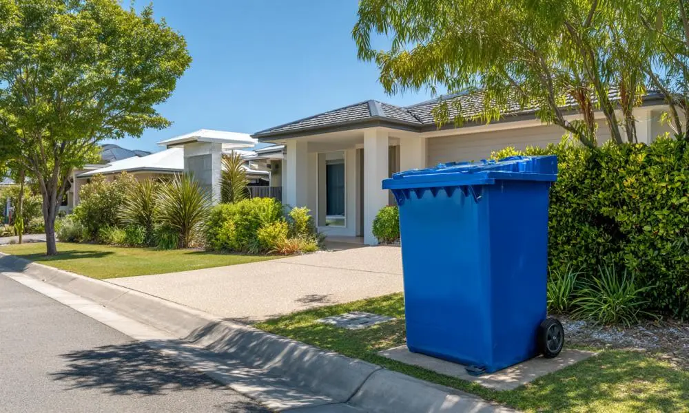
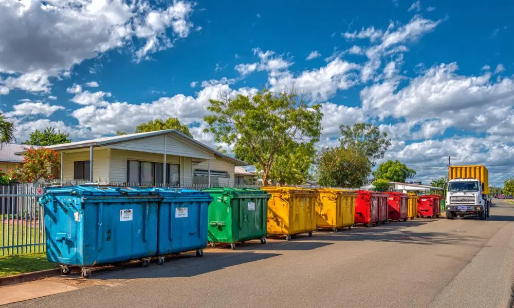

Skip Bin Hire Across Rockhampton QLD
We provide comprehensive skip bin hire services throughout Rockhampton QLD, delivering robust skip bins to residential properties, commercial sites, industrial areas, and construction projects across the region. Whether you are organising a major home cleanup, a kitchen renovation, landscaping work, or a commercial waste removal job, we help make rubbish disposal simpler with practical bin solutions suited to different locations and waste types. Finding a reliable skip bin hire near rockhampton city qld has never been easier, as we prioritize timely delivery and professional service for every customer.
Areas We Service
Our team proudly services the Rockhampton region and its many surrounding communities. We regularly deliver to suburbs including Wandal, Frenchville, Berserker, Park Avenue, Kawana, The Range, Norman Gardens, Gracemere, and Rockhampton North. Whether you need skip bins in rockhampton qld 4701 for a central city project or require heavy-duty bins for construction sites in the outer districts, we provide seamless logistics. We also extend our services to nearby areas including Yeppoon, Mount Morgan, and local industrial zones, ensuring that high-quality waste management is accessible no matter your specific location within Central Queensland.
Skip Bin Solutions Available in All Areas
We provide versatile skip bin solutions for a wide range of projects across Rockhampton QLD, including household cleanups, renovation waste, green waste removal, commercial rubbish, and construction debris. From smaller residential bins for weekend DIY projects to larger commercial and industrial skip bins, we help customers choose the right option based on project size, waste type, and available site access. When searching for reliable skip bins rockhampton qld, it is essential to consider the waste volume; our team offers expert advice to ensure you select the most efficient bin for your specific site requirements.
When You May Need Skip Bins in Rockhampton QLD
Skip bins are commonly used across Rockhampton QLD during moving house, garage cleanouts, landscaping work, office cleanups, renovations, and construction projects where large amounts of waste need to be removed efficiently. Without proper waste management, rubbish can quickly create clutter, safety risks, and unnecessary delays on residential and commercial sites. By booking a service like skip bin hire near rockhampton city qld, you ensure that your property remains clean and safe throughout the duration of your project. We cater to all types of waste, from general household items to heavy building materials.
Why Location Matters for Skip Bin Delivery
Different parts of Rockhampton QLD may have unique driveway space, access conditions, traffic limitations, or council requirements that affect skip bin placement and delivery. Some residential properties in areas with older layouts may have tighter access, while commercial and industrial sites may require larger bins and specific positioning. Understanding these conditions beforehand helps avoid delivery issues, delays, or unnecessary costs. When you need skip bins in rockhampton qld 4701, our team evaluates your site access to provide the most seamless delivery possible, ensuring that your bin is placed in the most convenient and safe spot available.

Frequently Asked Questions
Do you provide skip bins across all Rockhampton QLD suburbs?
Yes. We provide skip bins across Rockhampton QLD including residential, commercial, and industrial suburbs throughout the local area. Delivery availability may vary depending on access conditions, site space, and bin demand, but we service the vast majority of Rockhampton locations regularly, including the postcode 4701 and surrounding districts.
Does my location affect skip bin delivery in Rockhampton?
Yes. Some Rockhampton properties have limited driveway access, narrow streets, sloped land, or restricted placement areas that can affect where a skip bin can be positioned safely. Understanding your site access beforehand helps avoid delivery delays or placement issues. If you are looking for skip bin hire near rockhampton city qld, please let us know about any specific access requirements when booking.
Why is local area knowledge important for skip bin hire?
Different Rockhampton suburbs can have varied access conditions, property layouts, council requirements, and traffic limitations that affect skip bin placement and collection. Having specific knowledge regarding skip bins in rockhampton qld 4701 and the surrounding regional areas helps reduce delivery issues and ensures the correct skip bin solution is selected for each location, saving you time and money.